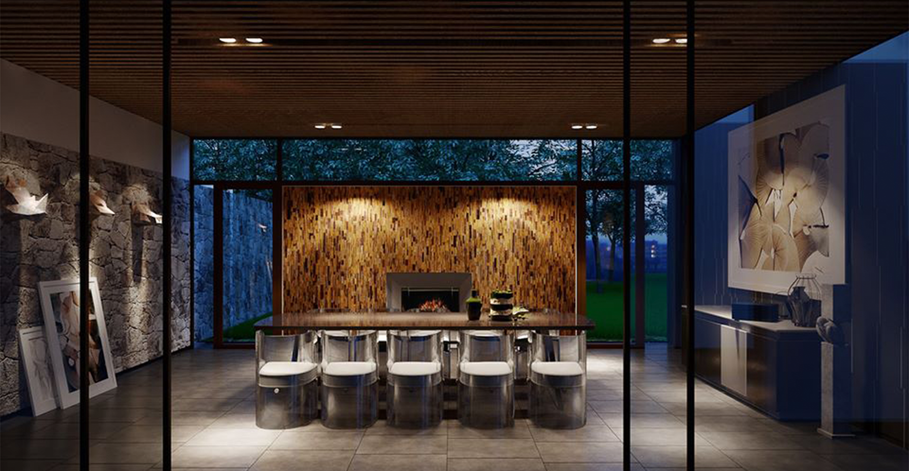

Bộ sưu tập các tác phẩm décor tinh xảo từ đá tự nhiên. Cảm nhận vẻ đẹp và hơi thở của thiên nhiên triệu năm ẩn trong từng thớ đá, các nghệ nhân bậc thầy đã sáng tạo, khắc gọt và chau chuốt ra các tác phẩm giá trị và mang tính hàm xúc cao.
golden flame
Tác phẩm bookmatch “Phượng hoàng lửa Golden Flame” gây ấn tượng thị giác mạnh mẽ bởi sắc vàng rực cùng những đường vân gỗ mun khoáng hoạt và rắn rỏi. Mang hình ảnh của những ngọn lửa bùng cháy rừng rực, Golden Flame là sự sống, sức mạnh, nghị lực và triển vọng. Sắc màu vàng thẫm, đa chiều cũng là biểu tượng của tư duy mới mẻ và khơi gợi sự sáng tạo. Với độ bền cao, Golden Flame cực kỳ phù hợp cho các thiết kế bàn bếp, tường trang trí,…là bức tranh thiên tạo mang lại điểm nhấn cá tính cho ngôi nhà của bạn.
Tác phẩm bookmatch “Phượng hoàng lửa Golden Flame” gây ấn tượng thị giác mạnh mẽ bởi sắc vàng rực cùng những đường vân gỗ mun khoáng hoạt và rắn rỏi. Mang hình ảnh của những ngọn lửa bùng cháy rừng rực, Golden Flame là sự sống, sức mạnh, nghị lực và triển vọng. Sắc màu vàng thẫm, đa chiều cũng là biểu tượng của tư duy mới mẻ và khơi gợi sự sáng tạo. Với độ bền cao, Golden Flame cực kỳ phù hợp cho các thiết kế bàn bếp, tường trang trí,…là bức tranh thiên tạo mang lại điểm nhấn cá tính cho ngôi nhà của bạn.
Illusion Blue
Illusion Blue thường được gọi là đá kim quy bởi loại đá quarzite đặc biệt của Brazil này có những vòng vân khép kín, sát nhau và phân bổ đều trên toàn phiến đá giống hệt họa tiết trên mai rùa. Khi ghép hai hay nhiều tấm đá đối xứng nhau, hình ảnh mai rùa càng trở nên rõ nét, tạo ra hiệu ứng thị giác lạ kỳ vô cùng thú vị. Mang hình ảnh của một trong tứ linh, Illusion Blue như loại đá tự nhiên mang lại bình an và may mắn cho gia chủ.
Irish Green
Một trong những loại đá hiếm có nhất của xứ sở Ireland từ phương Bắc xa xôi, Irish Green với sắc xanh thẫm xen lẫn xám đặc trưng sẽ mang cả thế giới thiên nhiên hoang dã nhưng trù phú của một ốc đảo nằm giữa Đại Tây Dương vào ngôi nhà của bạn. Lặng yên ngắm nhìn Irish Green, bạn sẽ thấy những khu rừng nguyên sinh cổ kính với các loài thực vật hoang dã bản địa như sồi, tần bì, phỉ, thủy tùng cùng chim và thú. Nơi đó là đầm lầy, là triền núi, là bờ biển xanh ngắt với những đợt sóng vỗ dạt dào. Irish Green mang vẻ đẹp tự nhiên thật nguyên sơ nhưng trong đó chất chứa nguồn năng lượng và sức sống bền bỉ của một vùng đất.
verde bamboo
Verde Bamboo là một dạng quartzite độc nhất có nguồn gốc từ Brazil. Với các vệt màu mạnh mẽ, đẳng hướng được phối trộn nhuần nhuyễn hơn cả một sự sắp đặt, Verde Bamboo như một bức tranh thiên tạo hiện đại theo trường phái ấn tượng. Trên mặt đá dù bóng láng vẫn ẩn hiện từng nét vân đá như vết rạn của sơn dầu trên vải toan. Độ bền, sắc màu và bề mặt láng bóng của đá rất phù hợp để trang trí ngoại thất cũng như nội thất: bàn bếp, mặt lavabo hay quầy bar,…
aurora blue
Nhẹ nhàng như một khổ vải, Aurora Blue là loại đá quarzite được khai thác từ Brazil. Sắc diện nữ tính của đá được ví như nữ thần Rạng đông, người mang ánh dương hồng dịu và tươi mới của buổi ban mai trong tiết trời xuân. Sở hữu những dải vân dài nghiêng thoải và song song trên nền màu trang nhã, Aurora Blue rất được ưa chuộng trong thiết kế nội thất hiện đại. Nhờ sự bố trí đều đặn của các nét vân, Aurora Blue không chỉ đẹp mà còn có thể tạo nên nhịp điệu hứng thú khi được xếp đặt thành các mảng đối xứng trong những không gian mà chủ nhân muốn tạo lập sự riêng có cho ngôi nhà của mình.
golden flame
Tác phẩm bookmatch “Phượng hoàng lửa Golden Flame” gây ấn tượng thị giác mạnh mẽ bởi sắc vàng rực cùng những đường vân gỗ mun khoáng hoạt và rắn rỏi. Mang hình ảnh của những ngọn lửa bùng cháy rừng rực, Golden Flame là sự sống, sức mạnh, nghị lực và triển vọng. Sắc màu vàng thẫm, đa chiều cũng là biểu tượng của tư duy mới mẻ và khơi gợi sự sáng tạo. Với độ bền cao, Golden Flame cực kỳ phù hợp cho các thiết kế bàn bếp, tường trang trí,…là bức tranh thiên tạo mang lại điểm nhấn cá tính cho ngôi nhà của bạn.
Tác phẩm bookmatch “Phượng hoàng lửa Golden Flame” gây ấn tượng thị giác mạnh mẽ bởi sắc vàng rực cùng những đường vân gỗ mun khoáng hoạt và rắn rỏi. Mang hình ảnh của những ngọn lửa bùng cháy rừng rực, Golden Flame là sự sống, sức mạnh, nghị lực và triển vọng. Sắc màu vàng thẫm, đa chiều cũng là biểu tượng của tư duy mới mẻ và khơi gợi sự sáng tạo. Với độ bền cao, Golden Flame cực kỳ phù hợp cho các thiết kế bàn bếp, tường trang trí,…là bức tranh thiên tạo mang lại điểm nhấn cá tính cho ngôi nhà của bạn.
Illusion Blue
Illusion Blue thường được gọi là đá kim quy bởi loại đá quarzite đặc biệt của Brazil này có những vòng vân khép kín, sát nhau và phân bổ đều trên toàn phiến đá giống hệt họa tiết trên mai rùa. Khi ghép hai hay nhiều tấm đá đối xứng nhau, hình ảnh mai rùa càng trở nên rõ nét, tạo ra hiệu ứng thị giác lạ kỳ vô cùng thú vị. Mang hình ảnh của một trong tứ linh, Illusion Blue như loại đá tự nhiên mang lại bình an và may mắn cho gia chủ.
Irish Green
Một trong những loại đá hiếm có nhất của xứ sở Ireland từ phương Bắc xa xôi, Irish Green với sắc xanh thẫm xen lẫn xám đặc trưng sẽ mang cả thế giới thiên nhiên hoang dã nhưng trù phú của một ốc đảo nằm giữa Đại Tây Dương vào ngôi nhà của bạn. Lặng yên ngắm nhìn Irish Green, bạn sẽ thấy những khu rừng nguyên sinh cổ kính với các loài thực vật hoang dã bản địa như sồi, tần bì, phỉ, thủy tùng cùng chim và thú. Nơi đó là đầm lầy, là triền núi, là bờ biển xanh ngắt với những đợt sóng vỗ dạt dào. Irish Green mang vẻ đẹp tự nhiên thật nguyên sơ nhưng trong đó chất chứa nguồn năng lượng và sức sống bền bỉ của một vùng đất.